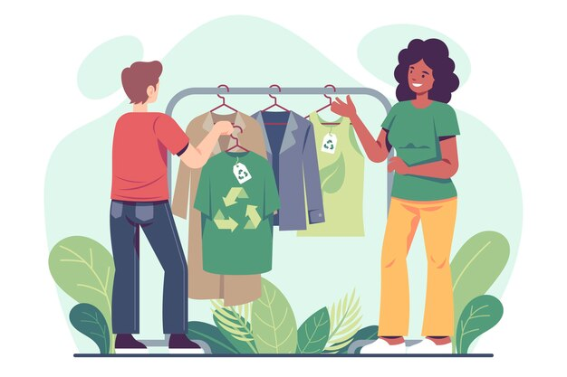

This article explores the phenomenon of greenwashing, referring to the deceptive practice of presenting a company, product, or service as environmentally friendly when it is not. It explores the harmful effects of greenwashing on consumer trust and environmental efforts, while also discussing ways to identify and combat greenwashing practices. Written by an author from Patagonia, a renowned outdoor clothing and gear company known for its commitment to environmental sustainability, the article offers insights and perspectives from a leading voice in ethical business practices and environmental advocacy.
This article from Sustainable Jungle, a platform dedicated to promoting sustainability and eco-friendly living, provides an in-depth exploration of upcycled clothing. It explains the concept of upcycling, which involves transforming discarded or waste materials into new products of higher value, particularly in the context of fashion. The article discusses the environmental benefits of upcycled clothing, such as reducing waste and conserving resources, while also highlighting innovative upcycling techniques and showcasing examples of upcycled fashion brands making a positive impact on the fashion industry and the planet.
This article from Sustainable Jungle, a platform dedicated to promoting sustainability and eco-friendly living, provides an in-depth exploration of upcycled clothing. It explains the concept of upcycling, which involves transforming discarded or waste materials into new products of higher value, particularly in the context of fashion. The article discusses the environmental benefits of upcycled clothing, such as reducing waste and conserving resources, while also highlighting innovative upcycling techniques and showcasing examples of upcycled fashion brands making a positive impact on the fashion industry and the planet.
